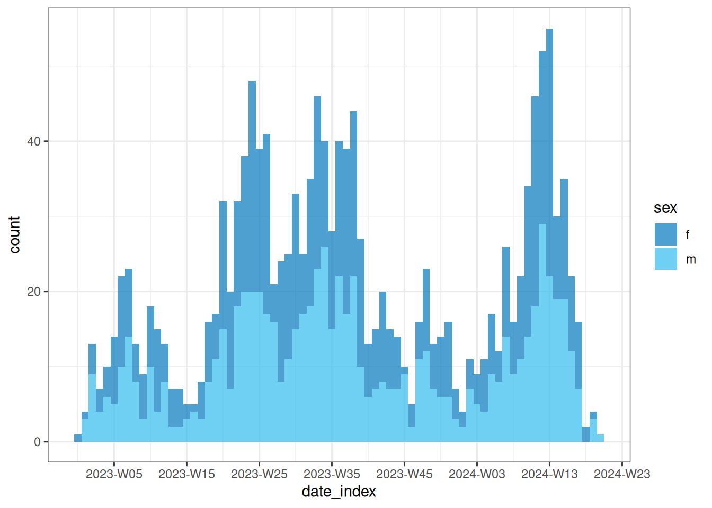
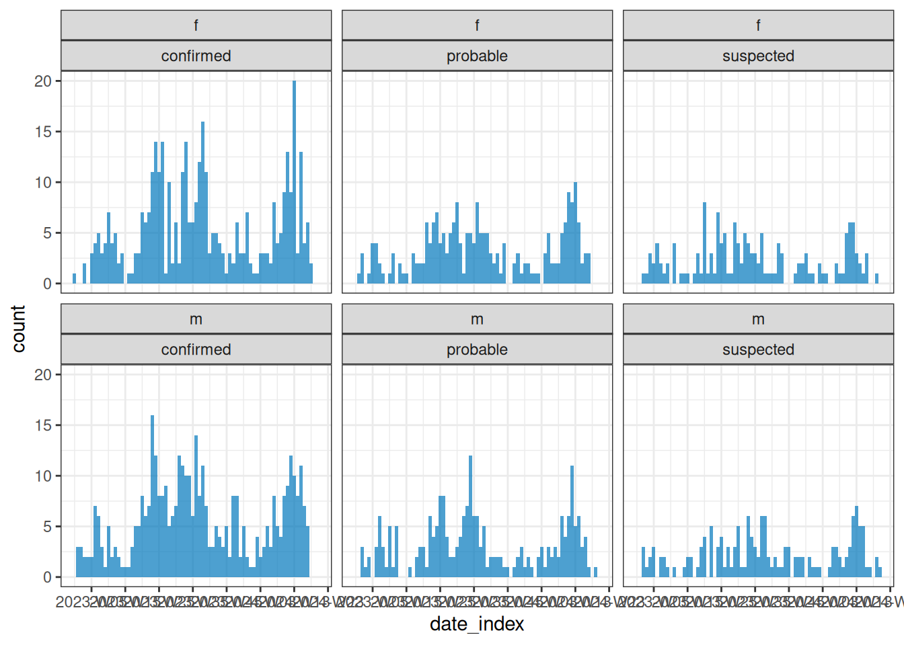
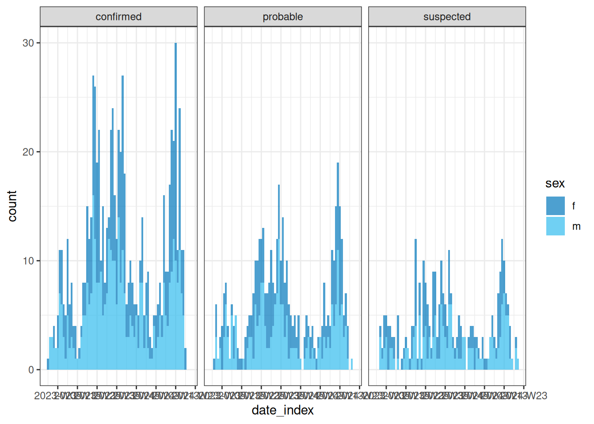
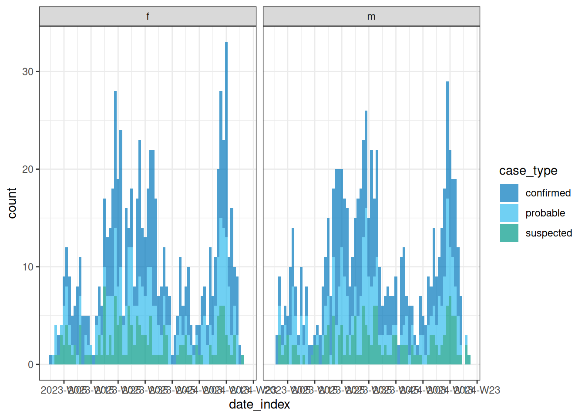

library(incidence2)
#> Loading required package: grates
library(tidyverse)
#> ── Attaching core tidyverse packages ──────────────────────── tidyverse 2.0.0 ──
#> ✔ dplyr 1.1.4 ✔ readr 2.1.5
#> ✔ forcats 1.0.0 ✔ stringr 1.5.1
#> ✔ ggplot2 3.5.1 ✔ tibble 3.2.1
#> ✔ lubridate 1.9.4 ✔ tidyr 1.3.1
#> ✔ purrr 1.0.2
#> ── Conflicts ────────────────────────────────────────── tidyverse_conflicts() ──
#> ✖ lubridate::epiweek() masks grates::epiweek()
#> ✖ dplyr::filter() masks stats::filter()
#> ✖ lubridate::isoweek() masks grates::isoweek()
#> ✖ dplyr::lag() masks stats::lag()
#> ✖ lubridate::year() masks grates::year()
#> ℹ Use the conflicted package (<http://conflicted.r-lib.org/>) to force all conflicts to become errors
# agregar lista de casos
sim_data <- simulist::sim_linelist(
outbreak_size = c(1000, 1500)
) %>%
as_tibble()
#> Warning: Number of cases exceeds maximum outbreak size.
#> Returning data early with 1510 cases and 2962 total contacts (including cases).
sim_data
#> # A tibble: 1,510 × 12
#> id case_name case_type sex age date_onset date_admission outcome
#> <int> <chr> <chr> <chr> <int> <date> <date> <chr>
#> 1 1 David Flores probable m 29 2023-01-01 2023-01-04 recove…
#> 2 2 Chantel Lovern probable f 9 2023-01-08 NA recove…
#> 3 3 Keeman Gonzales suspected m 31 2023-01-08 2023-01-13 died
#> 4 4 Destiny Loera-… probable f 37 2023-01-01 NA recove…
#> 5 5 Torre Ford confirmed m 4 2023-01-08 NA recove…
#> 6 6 Marcel Pelsmae… probable m 87 2023-01-08 NA recove…
#> 7 7 Cynthia Ayala confirmed f 32 2023-01-13 NA died
#> 8 9 Cheyenne Alema… confirmed f 58 2023-01-05 2023-01-07 died
#> 9 10 Jordan Cross probable m 46 2023-01-03 2023-01-06 died
#> 10 13 Haley Montgome… confirmed f 41 2023-01-14 NA recove…
#> # ℹ 1,500 more rows
#> # ℹ 4 more variables: date_outcome <date>, date_first_contact <date>,
#> # date_last_contact <date>, ct_value <dbl>
# Agregar por dias como intervalo temporal
dialy_incidence <- incidence2::incidence(
sim_data,
date_index = "date_onset",
interval = "day"
)
# Ver datos tipo incidencia
dialy_incidence
#> # incidence: 222 x 3
#> # count vars: date_onset
#> date_index count_variable count
#> <date> <chr> <int>
#> 1 2023-01-01 date_onset 2
#> 2 2023-01-03 date_onset 1
#> 3 2023-01-05 date_onset 1
#> 4 2023-01-07 date_onset 1
#> 5 2023-01-08 date_onset 5
#> 6 2023-01-09 date_onset 1
#> 7 2023-01-10 date_onset 1
#> 8 2023-01-11 date_onset 2
#> 9 2023-01-12 date_onset 1
#> 10 2023-01-13 date_onset 6
#> # ℹ 212 more rows
# Agregar por semana y grupo sexo
weekly_incidence <- incidence2::incidence(
sim_data,
date_index = "date_onset",
interval = "week",
groups = "sex"
)
weekly_incidence
#> # incidence: 68 x 4
#> # count vars: date_onset
#> # groups: sex
#> date_index sex count_variable count
#> <isowk> <chr> <chr> <int>
#> 1 2022-W52 f date_onset 1
#> 2 2022-W52 m date_onset 1
#> 3 2023-W01 f date_onset 2
#> 4 2023-W01 m date_onset 6
#> 5 2023-W02 f date_onset 10
#> 6 2023-W02 m date_onset 5
#> 7 2023-W03 f date_onset 7
#> 8 2023-W03 m date_onset 5
#> 9 2023-W04 f date_onset 8
#> 10 2023-W04 m date_onset 8
#> # ℹ 58 more rows
plot(weekly_incidence)plot(weekly_incidence,fill = "sex")
# Agregar por semana y grupo sexo
weekly_incidence <- incidence2::incidence(
sim_data,
date_index = "date_onset",
interval = "week", # Aggregate by weekly intervals
groups = c("sex", "case_type") # Group by sex and case type
)
plot(weekly_incidence)
plot(weekly_incidence,fill = "sex")
plot(weekly_incidence,fill = "case_type")
# Agregar casos contados por region
cases_incidence <-
incidence2::covidregionaldataUK %>%
as_tibble() %>%
# use {tidyr} to preprocess missing values
tidyr::replace_na(base::list(cases_new = 0)) %>%
# use {incidence2} to compute the daily incidence
incidence2::incidence(
date_index = "date",
counts = "cases_new",
count_values_to = "confirm",
date_names_to = "date",
complete_dates = TRUE
)
cases_incidence %>%
plot()
cases_90d <- cases_incidence %>%
dplyr::slice_head(n = 90)
cases_90d %>%
plot()
# Adaptar para {EpiNow2}
cases_epinow <- cases_90d %>%
dplyr::select(-count_variable)
cases_epinow
#> # A tibble: 90 × 2
#> date confirm
#> <date> <dbl>
#> 1 2020-01-30 3
#> 2 2020-01-31 0
#> 3 2020-02-01 0
#> 4 2020-02-02 0
#> 5 2020-02-03 0
#> 6 2020-02-04 0
#> 7 2020-02-05 2
#> 8 2020-02-06 0
#> 9 2020-02-07 0
#> 10 2020-02-08 8
#> # ℹ 80 more rows